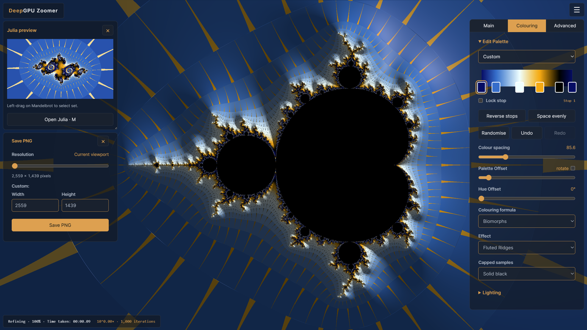
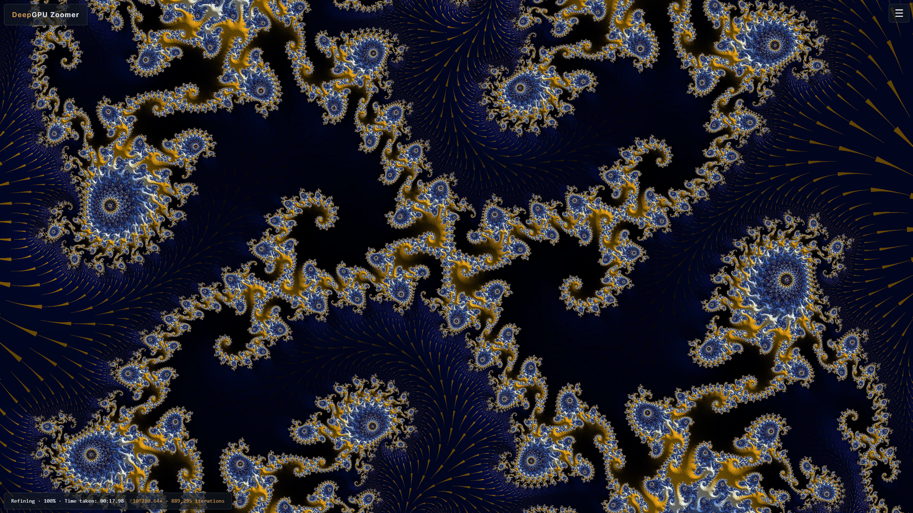
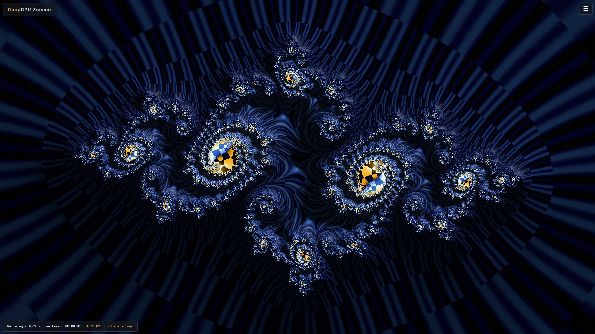
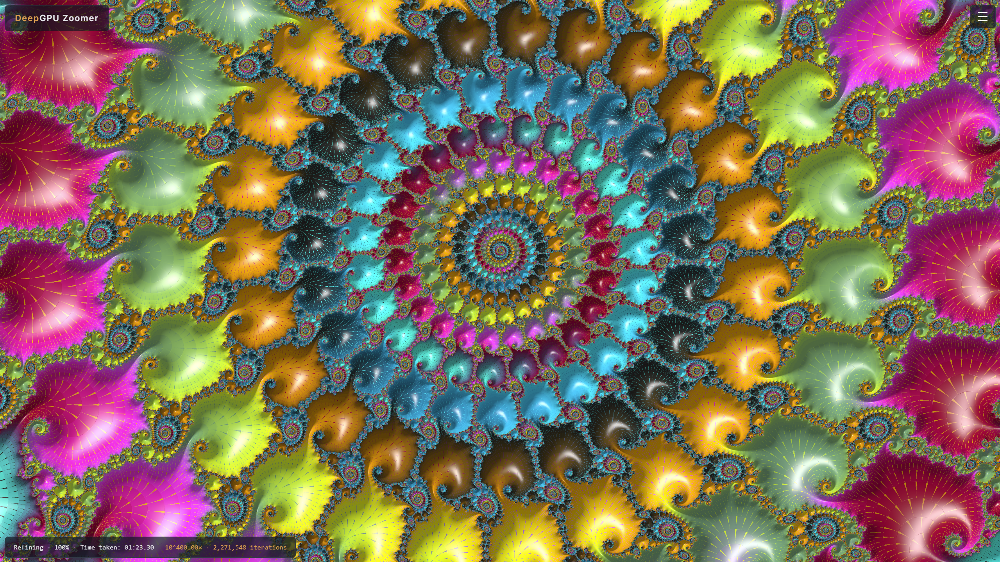
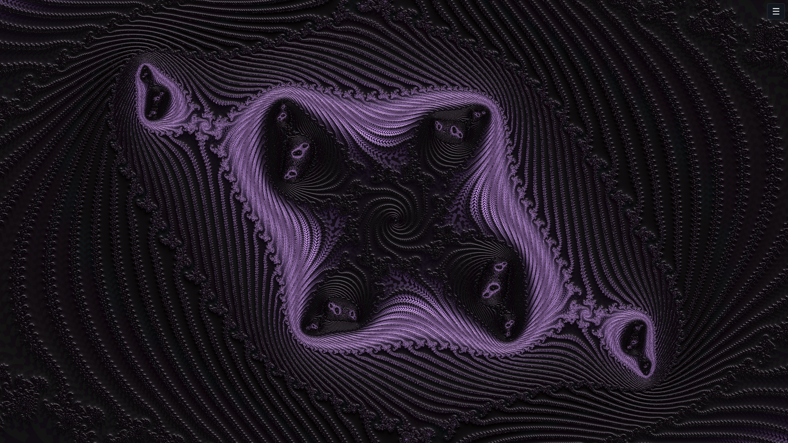
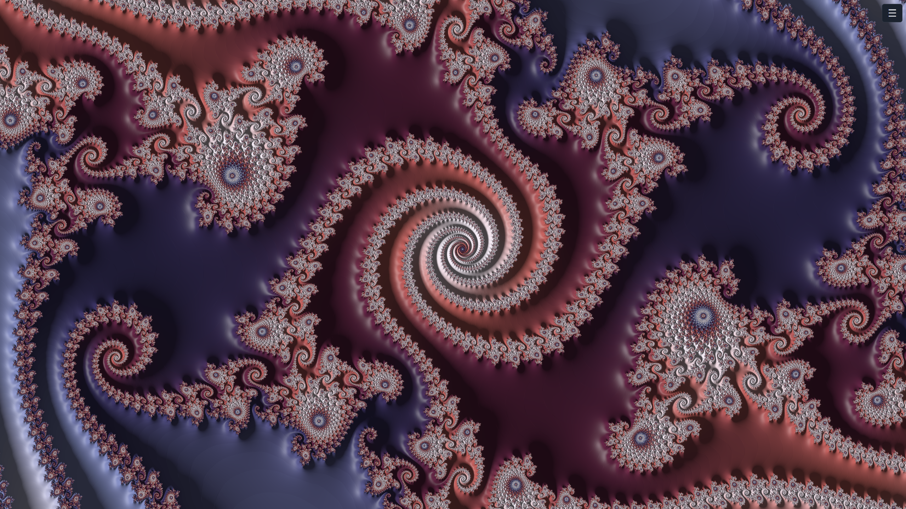
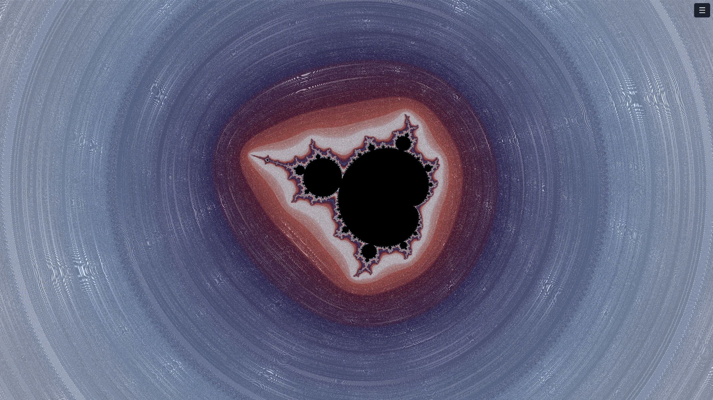
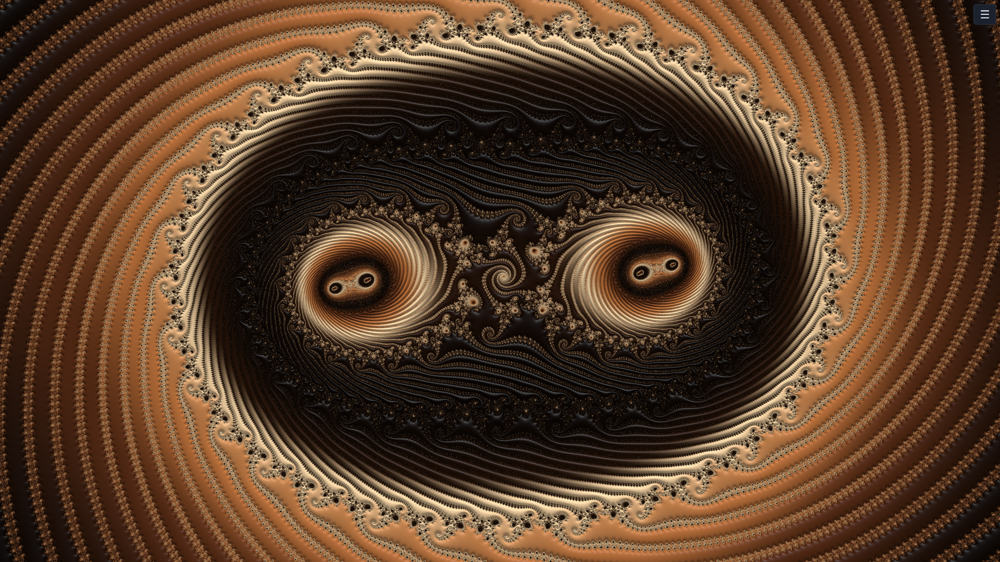

Gallery
Mandelbrot and Julia discoveries, captured in DeepGPU Zoomer. Select an image to view the full PNG.
















Mandelbrot and Julia discoveries, captured in DeepGPU Zoomer. Select an image to view the full PNG.







